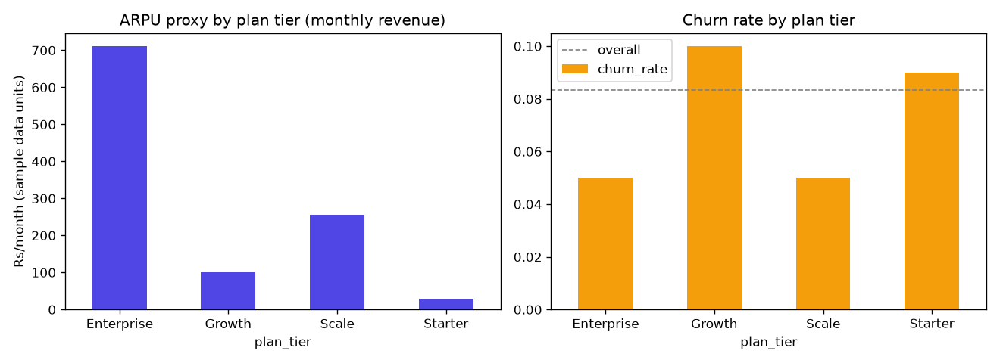

AI Business Analyst · Internal analysis
Pricing tier sanity-check for the proposed Free / Pro / Advanced plans
Date: 2026-11-14 · Script: analysis/pricing_sanity_check.py · Data: backend/sample_data/customers.csv (900 rows)
Question, metric and decision
Do the proposed launch prices (Free ₹0, Pro ₹499, Advanced ₹1,499) sit in a plausible range relative to observed average revenue per user (ARPU = mean monthly_revenue) and churn by plan_tier? The result informs the pricing copy shipped on the new /pricing page and whether the Advanced tier is underpriced.
Method and data quality
- Grouped
monthly_revenue, churned and usage_score by plan_tier; 95% confidence interval via normal approximation (SEM × 1.96).
- Data checks: 900 rows, 0 missing
monthly_revenue, 0 duplicate customer_id. Cross-sectional data — no time-ordering or leakage concern for a level metric.
Results
| Plan tier | Customers | ARPU | 95% CI (±) | Churn rate | Avg usage score |
|---|
| Starter | 369 | 29.6 | 0.5 | 9% | 39.3 |
| Growth | 279 | 101.4 | 2.1 | 10% | 40.3 |
| Scale | 164 | 256.1 | 7.4 | 5% | 56.3 |
| Enterprise | 88 | 711.2 | 30.2 | 5% | 58.4 |

Chart generated by the analysis script; source file analysis/outputs/tier_arpu_churn.png, table in analysis/outputs/tier_summary.csv.
Reading against the proposed tiers
Finding: the sample's observed ARPU ladder (≈30 → 101 → 256 → 711) spans roughly 24× from entry to top, while the proposed price ladder (499 → 1,499) spans only 3×. The proposed tiers compress the premium gradient relative to what the data shows customers currently pay.
- Pro at ₹499 lands between the sample's Growth (≈101) and Scale (≈256) ARPU — a plausible mid-market anchor.
- Advanced at ₹1,499 sits between Scale (≈256) and Enterprise (≈711). Given the top tier's observed ARPU of ≈711, Advanced may be underpriced at launch.
- Churn falls with tier (9–10% in Starter/Growth vs 5% in Scale/Enterprise), consistent with higher-priced plans retaining better and supporting premium positioning.
Limitations
- The data is sample/seed data bundled with the app, not real customer records — conclusions are directional only.
- ARPU is in sample-data units, not verified rupees; the currency mapping is assumed, not measured.
- No willingness-to-pay survey was run. The disclaimer on the /pricing page ("validate willingness to pay with actual shop owners") remains necessary and accurate.
- Churn differences are not significance-tested; tiers differ in size (n=88 to 369), so small-tier estimates are noisier.
Finding vs hypothesis
- Finding (in-sample): observed ARPU ladder is far steeper than the proposed price ladder; churn decreases with tier.
- Hypothesis: Advanced could support a higher launch price or a wider feature gap vs Pro. Confirming this needs real customer data or a survey of shop owners.